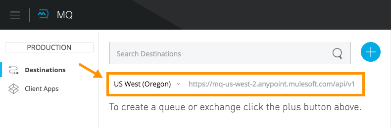

FAQ: Anypoint MQ
This document lists frequently asked questions about Anypoint MQ.
Why is MQ not shown in Anypoint Platform?
Anypoint MQ requires a separate Enterprise subscription and is not included in the Anypoint Platform trial version. Contact your MuleSoft representative for more information. If you don’t have an Enterprise subscription, you can use the MuleSoft Active MQ or Rabbit MQ.
How do I create and send messages into MQ from Mule?
After you obtain an Enterprise subscription and contacted your MuleSoft representative to activate Anypoint MQ, you can use https://anypoint.mulesoft.com//signin[Anypoint Platform] to create a queue or message exchange, and send messages to it. For more information, see the MQ Tutorial.
How does MQ encrypt messages?
If you choose to encrypt messages, Anypoint MQ provides password-based encryption using PBE with MD5 and Triple DES, and with a 168-bit key.
Why can’t I see FIFO Queue in the menu to create a queue or exchange?
If the blue create button doesn’t list FIFO Queue:
-
Ensure you have an Anypoint MQ FIFO entitlement. Check with your MuleSoft representative.
-
Ensure that your region setting is US-West:

How many in flight messages can I have per queue?
Anypoint MQ supports up to 120,000 in flight messages per each non-FIFO queue. FIFO queues permit up to 20,000 in flight messages per FIFO queue due to the extra processing required for FIFO queues. An in flight message is a message received by a queue, but not deleted, that is, a message awaiting ACK or NACK, or a message with an expired Default Lock TTL (time-to-live) setting. A single queue can contain an unlimited number of messages; however the number of in flight messages is limited. The maximum duration for any message, either in flight or not is 2 weeks, after which Anypoint MQ deletes the message.
Can I share queues across regions?
Queues in each region are separate from those in other regions. You can name queues the same in each region, but they cant share messages across regions.
How can I restrict access to a queue or message exchange?
You can use Anypoint Platform > Access Management > Business Groups or Environments. Queues and message exchanges created in a business group or environment are only visible to those with access to the business group or environment.
Can I consume MQ messages in batches?
Yes, the REST API supports the batchSize query parameter which lets you retrieve up to 10 messages in a single call (default value). The maximum number that can be retrieved are 10 messages in a single call, you can configure a lower value with the Prefetch Config parameter in the Anypoint MQ Connector
as described in Studio Prefetch Tab. Note the number of messages retrieved by the connector can be less that the amount configured. A number higher that 10 can be configured but it will be overriden.
Can I use Anypoint MQ on premises?
You can publish a message from an on-premises system to Anypoint MQ and have another on-premises subscriber pull messages off of Anypoint MQ. Currently Anypoint MQ cannot be deployed on-premises. If you need a messaging source on-premises, you can use MuleSoft’s Active MQ instead.
How can non-Mule applications interface with Anypoint MQ?
If you have non-Mule applications, you can use our MQ REST API to send and receive messages.
What is the throughput capacity of Anypoint MQ?
Anypoint MQ is horizontally scalable and supports higher throughputs as needed.
Can I be notified when a message arrives in a queue?
Anypoint MQ provides long polling. You can do a REST request and ask the server to keep the TCP socket open for up to 20 seconds to fulfill your request if there are not enough messages.
How can I process messages one by one?
To process messages one by one, set the Anypoint MQ connector to the consume operation, which retrieves a
message from the queue, or receives null if a message is not available. In addition, use a synchronous flow
with a poll scope to fire the process regularly. More than one in-flight message can occur if the process
time between anypoint-mq:consume and anypoint-mq:ack is not lower than the Default Lock TTL for the queue,
and if you don’t create exception options and NACK the message accordingly.
Example:
<flow name="testanypointmq1by1Flow2" processingstrategy="synchronous">
<poll doc:name="Poll">
<logger doc:name="Logger" level="INFO" message="Pooling fired"></logger>
</poll>
<anypoint-mq:consume config-ref="Anypoint_MQ_Configuration" destination="queuename" doc:name="Anypoint MQ"/>
<logger doc:name="Logger" level="INFO" message="Processing message received. #[payload]"/>
<anypoint-mq:ack config-ref="Anypoint_MQ_Configuration" doc:name="Anypoint MQ"/>
<logger doc:name="Logger" level="INFO" message="Message processed."/>
</flow>Can we see the MQ headers in the browse message options?
Anypoint MQ provides direct access to the message ID and payload. You can see the message headers using the Chrome browser and its Network Inspector feature.
Add MQ connector support to Mule shared resources?
The only officially supported connectors and transports for shared resources are: HTTP/HTTPS, VM, JMS, JMS Caching Connection Factory, Database, WMQ, JBoss Transaction Manager, and Bitronix Transaction Manager.
If a data center fails, what happens to in-flight messages?
There are multiple data centers in a region which again have multiple availability zones. One availability zone going down does not affect Anypoint MQ services. If the whole region goes down, only a service in that region can be affected.
If an availability zone fails, what’s the client impact?
Anypoint MQ provides persistent data storage across multiple data centers in a region, ensuring that it can handle data center outages and provide full disaster recovery in case of an availability zone going down.
Can I use a retry strategy with the MQ connector?
The Anypoint MQ connector does not exactly use a connection-based protocol, but uses REST behind the scenes, and therefore, you cannot use reconnection strategies with this connector.
On the inbound side, you can easily mimic a retry strategy using a max redelivery attribute set to your maximum number of retries and an exception strategy to move to a DLQ when the limit is hit.
On the outbound side, stick to the same triggering mechanism. Otherwise you can use the until-successful element with this connector.
You should also configure the HTTP connector so that Global Element Properties > Set Max Redelivery is set to the -1 value.
How do we recover and handle failover?
The network that Anypoint MQ runs on provides high availability replications across its many datacenters.
How do we ensure a message is uniquely processed when failover occurs?
If a server fails and failover occurs, messages continue to be processed on other servers in the network on which Anypoint MQ runs. Normal Anypoint MQ queues do not guarantee only-once message delivery, only FIFO queues support only-once message delivery. The high availability network deduplicates messages for FIFO queues automatically.
Does MQ guarantee message delivery?
Yes, Anypoint MQ guarantees "at least once" delivery of messages to the destination.
How do I create lots of queues and message exchanges?
You can use a curl command with the REST Administration API in a for loop to create the number of queues and message exchanges you need. See an example curl command that you can alter to create a queue or message exchange.
Why am I seeing 400 bad request errors when using prefetch to receive messages?
When using MQ as a message processor with prefetch, only use a global prefetch configuration.
For example, the following local prefetch does not work:
<anypoint-mq:subscriber config-ref="Anypoint_MQ_Configuration"
destination="programmatically" doc:name="Anypoint MQ" >
<anypoint-mq:prefetch fetchSize="50" fetchTimeout="10000"/>
</anypoint-mq:subscriber>Use a global prefetch instead:
<anypoint-mq:prefetch name="Prefetch_Settings" fetchSize="50"
fetchTimeout="10000" doc:name="Prefetch Settings"/>
<anypoint-mq:subscriber config-ref="Anypoint_MQ_Configuration"
destination="programmatically" doc:name="Anypoint MQ"
prefetch-ref="Prefetch_Settings"/>How do I delete a queue?
To delete a queue:
-
Click Destinations.
-
Click the right side of the queue entry in the Destinations table:
-
Click the trash can symbol in the upper right.
-
In the Delete Queue menu, click the checkbox:
-
Click Delete Queue.
Note: The time it takes to delete or purge a queue is approximately one minute. During this time, the status of the affected queue may not be updated.
How do I delete a message exchange?
To delete a message exchange:
-
Click Destinations.
-
Click the right side of the message exchange entry in the Destinations table:
-
Click the trash can symbol in the upper right.
-
In the Delete Exchange menu, click the checkbox:
-
Click Delete Exchange.